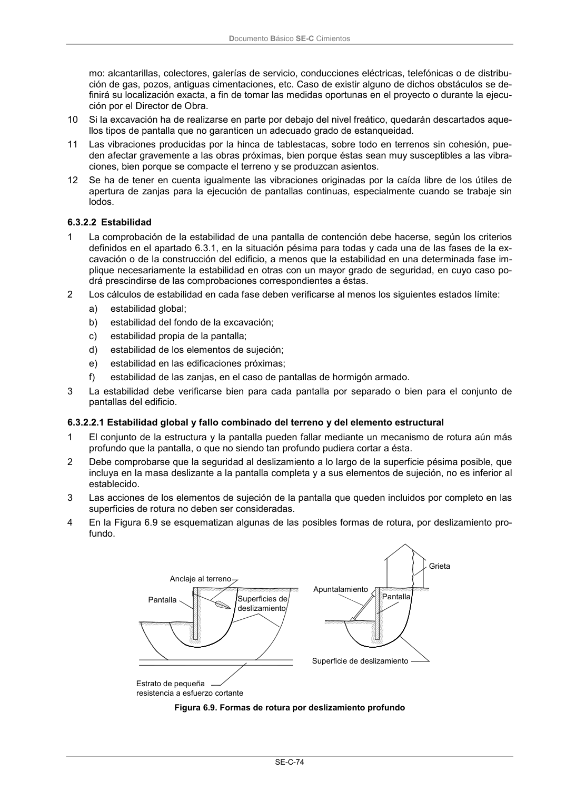

DB-SE-C Cimientos · edición 2019-12-20 · capa oficial
Documento DB-SE-C-oficial · SHA-256 del PDF a71133f4b0dca253e45ea3071c70f2a512354bcc5cd841bf89b1a502f567ac5e
Página física 79 de 165.
Copia fiel del PDF fuente · Fuente oficial
Ficha de la disposición en la fuente oficial
Formato: Texto de la página (Markdown)
Documento Básico SE-C Cimientos SE-C-74 mo: alcantarillas, colectores, galerías de servicio, conducciones eléctricas, telefónicas o de distribu- ción de gas, pozos, antiguas cimentaciones, etc. Caso de existir alguno de dichos obstáculos se de- finirá su localización exacta, a fin de tomar las medidas oportunas en el proyecto o durante la ejecu- ción por el Director de Obra. 10 Si la excavación ha de realizarse en parte por debajo del nivel freático, quedarán descartados aque- llos tipos de pantalla que no garanticen un adecuado grado de estanqueidad. 11 Las vibraciones producidas por la hinca de tablestacas, sobre todo en terrenos sin cohesión, pue- den afectar gravemente a las obras próximas, bien porque éstas sean muy susceptibles a las vibra- ciones, bien porque se compacte el terreno y se produzcan asientos. 12 Se ha de tener en cuenta igualmente las vibraciones originadas por la caída libre de los útiles de apertura de zanjas para la ejecución de pantallas continuas, especialmente cuando se trabaje sin lodos. 6.3.2.2 Estabilidad 1 La comprobación de la estabilidad de una pantalla de contención debe hacerse, según los criterios definidos en el apartado 6.3.1, en la situación pésima para todas y cada una de las fases de la ex- cavación o de la construcción del edificio, a menos que la estabilidad en una determinada fase im- plique necesariamente la estabilidad en otras con un mayor grado de seguridad, en cuyo caso po- drá prescindirse de las comprobaciones correspondientes a éstas. 2 Los cálculos de estabilidad en cada fase deben verificarse al menos los siguientes estados límite: a) estabilidad global; b) estabilidad del fondo de la excavación; c) estabilidad propia de la pantalla; d) estabilidad de los elementos de sujeción; e) estabilidad en las edificaciones próximas; f) estabilidad de las zanjas, en el caso de pantallas de hormigón armado. 3 La estabilidad debe verificarse bien para cada pantalla por separado o bien para el conjunto de pantallas del edificio. 6.3.2.2.1 Estabilidad global y fallo combinado del terreno y del elemento estructural 1 El conjunto de la estructura y la pantalla pueden fallar mediante un mecanismo de rotura aún más profundo que la pantalla, o que no siendo tan profundo pudiera cortar a ésta. 2 Debe comprobarse que la seguridad al deslizamiento a lo largo de la superficie pésima posible, que incluya en la masa deslizante a la pantalla completa y a sus elementos de sujeción, no es inferior al establecido. 3 Las acciones de los elementos de sujeción de la pantalla que queden incluidos por completo en las superficies de rotura no deben ser consideradas. 4 En la Figura 6.9 se esquematizan algunas de las posibles formas de rotura, por deslizamiento pro- fundo. Pantalla Anclaje al terreno Superficies de deslizamiento Estrato de pequeña resistencia a esfuerzo cortante Grieta Pantalla Superficie de deslizamiento Apuntalamiento Figura 6.9. Formas de rotura por deslizamiento profundo
